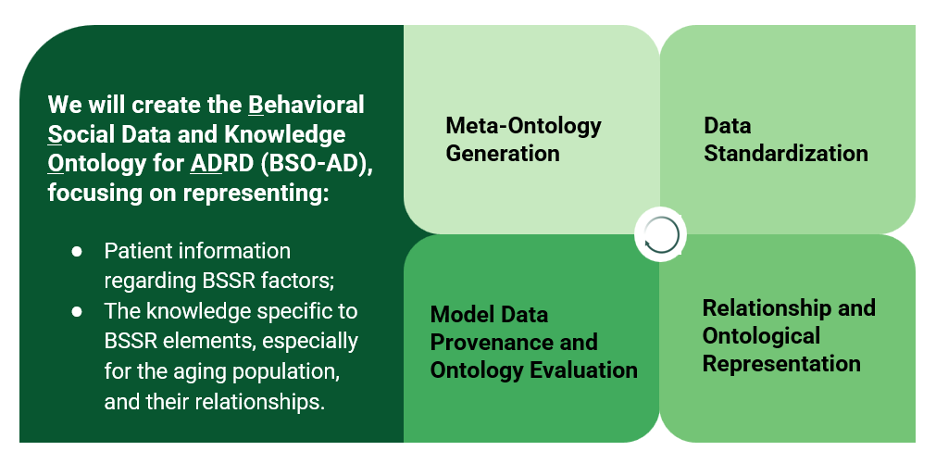
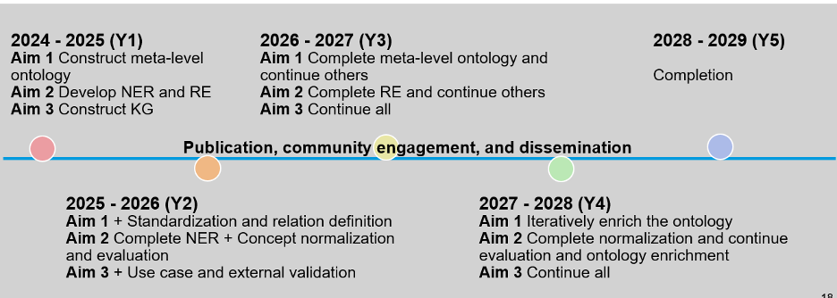

Standardizing and Harmonizing Behavioral and Social Science Research
Factors in Alzheimer's Disease through Ontology-Based Approaches
Overview
Alzheimer disease and related dementias (ADRD) affect millions of
individuals in the US, but there is a lack of effective treatment
due to intricate pathogenesis mechanisms and limited
understanding. Behavioral and Social Science Research (BSSR)
contributes to a holistic comprehension of ADRD, serving as a
guiding light in the development of interventions, support
systems, and policies
Aims
1. Develop an ontology to support the
standardization of behavioral and social factors for ADRD
2. Extract and normalize BSSR-related information
in clinical notes and literature documents using NLP technologies
3. Evaluate the coverage of the ontology in
representing and integrating behavioral and social factors from
observational data of different sources via a comprehensive
knowledge graph and demonstrated through use cases

Timeline
Publications, community engagement, and dissemination activities
will be conducted consistently throughout the five-year duration
of the project.
